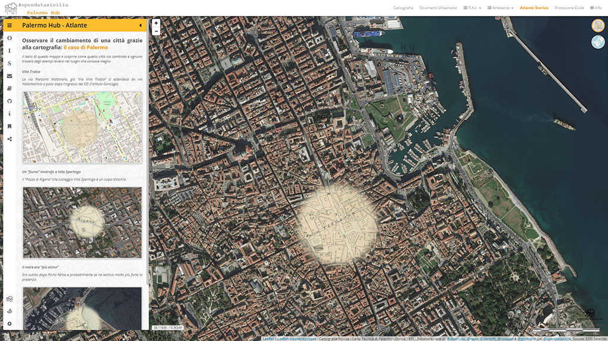
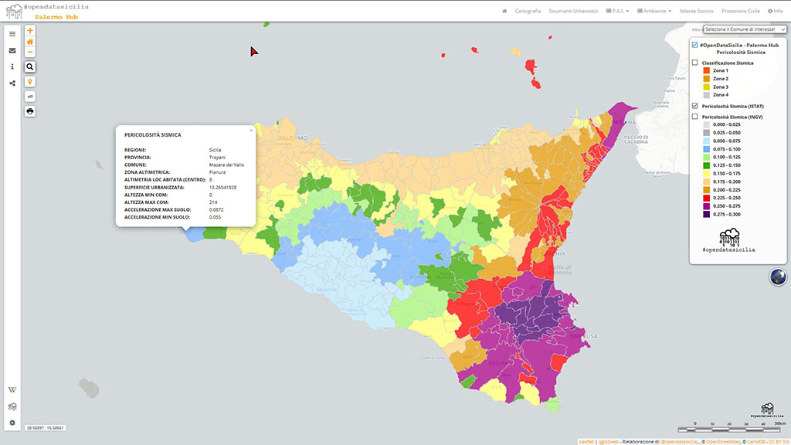
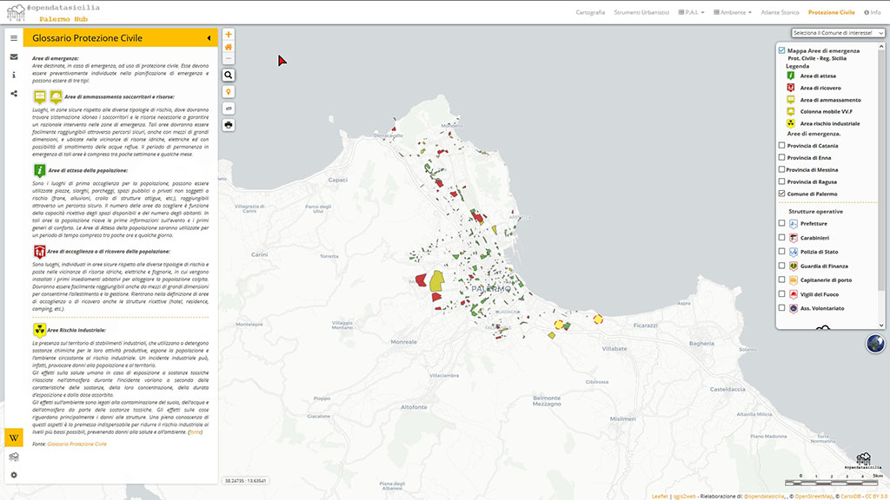
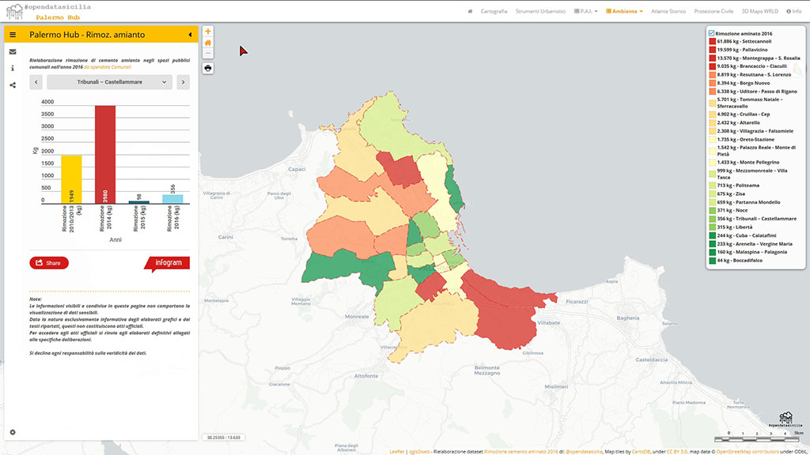
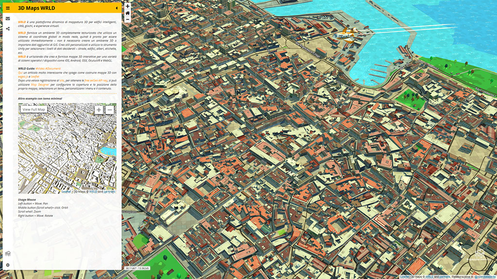

| 
Palermo hub è un contenitore di mappe su Palermo realizzato da opendatasicilia.it , non ha alcun intento commerciale, l’unica finalità è mostrare le possibilità di rielaborazione e comunicazione offerte dagli open data o dati pubblici , non ha alcun intento commerciale, l’unica finalità è mostrare le possibilità di rielaborazione e comunicazione offerte dagli open data o dati pubblici comunali, regionali e nazionali. comunali, regionali e nazionali.
Attualmente sono disponibili le segeunti mappe:
1 - Atlante delle Carte Tecniche storiche - Osservare il cambiamento di una città grazie alla cartografia... Rispetto alla mappa pubblicata ad Aprile 2017, è stata aggiunta una nuova carta tecnica ed è stato migliorato il passaggio da una carta all'altra, mantenendo posizione e zoom
2 - Cartografia CTR 10k e Ortofoto di base - Carta Tecnica Regionale 10K (C.T.R.), Ortofoto volo ATA 2012-2013 (Sicilia) e Ortofoto volo ATA 2012-2013 Palermo 14 cm - Carta Tecnica Regionale 10K (C.T.R.), Ortofoto volo ATA 2012-2013 (Sicilia) e Ortofoto volo ATA 2012-2013 Palermo 14 cm
3 - Strumenti Urbanistici Vigenti al 2017 - Variante Generale al PRG - PPE Centro Storico - Variente Generle l P.R.G. - Zonizzazione e vincoli sul territorio adeguati ai D. Dir 558 e 124/DRU/02 di approvazione - Luglio 2003 - Presa D'atto Delibera 7/2004 e Piano Particolareggiato Esecutivo del centro storico. Variente Generle l P.R.G. - Zonizzazione e vincoli sul territorio adeguati ai D. Dir 558 e 124/DRU/02 di approvazione - Luglio 2003 - Presa D'atto Delibera 7/2004 e Piano Particolareggiato Esecutivo del centro storico. - Variente Generle l P.R.G. - Zonizzazione e vincoli sul territorio adeguati ai D. Dir 558 e 124/DRU/02 di approvazione - Luglio 2003 - Presa D'atto Delibera 7/2004 e Piano Particolareggiato Esecutivo del centro storico. Variente Generle l P.R.G. - Zonizzazione e vincoli sul territorio adeguati ai D. Dir 558 e 124/DRU/02 di approvazione - Luglio 2003 - Presa D'atto Delibera 7/2004 e Piano Particolareggiato Esecutivo del centro storico.
4 - Piano Stralcio di Bacino per l‘Assetto Idrogeologico (P.A.I.) Regione Sicilia - (Palermo), strumento fondamentale della politica di assetto territoriale delineata dalla legge 183/89, avviata in ogni regione la pianificazione di bacino, esso ne costituisce il primo stralcio tematico e funzionale.
4a - Mappa delle Pericolosità e del Rischio Geomofologico  - Pericolosità ambientale riferita alla probabilità che si verifichi un fenomeno di instabilità geomorfologica, cioè un fenomeno connesso a forme del terreno che non sono in equilibrio con l’ambiente naturale o che lo sono ma in modo particolarmente dinamico. - Pericolosità ambientale riferita alla probabilità che si verifichi un fenomeno di instabilità geomorfologica, cioè un fenomeno connesso a forme del terreno che non sono in equilibrio con l’ambiente naturale o che lo sono ma in modo particolarmente dinamico.
4b - Mappa dei Dissesti - Insieme dei processi morfologici che hanno un'azione fortemente distruttiva in termini di degradazione del suolo e quindi indirettamente nei confronti dei manufatti. Esso comprende tutti quei processi, a partire dall'erosione superficiale e sotto la superficie, fino agli eventi più catastrofici quali frane e alluvioni. - Insieme dei processi morfologici che hanno un'azione fortemente distruttiva in termini di degradazione del suolo e quindi indirettamente nei confronti dei manufatti. Esso comprende tutti quei processi, a partire dall'erosione superficiale e sotto la superficie, fino agli eventi più catastrofici quali frane e alluvioni.
4c - Mappa delle Pericolosità e Rischio Idraulico per fenomeni di esondazione - Con il termine di pericolosità idraulica , in idrologia, si definisce la probabilità che un fenomeno naturale potenzialmente distruttivo si verifichi in un dato tempo ed in una data area. La pericolosità di evento naturale è definita sulla base del tempo di ritorno oppure del rischio idraulico. La pericolosità idraulica si differenzia in quattro classi. - Con il termine di pericolosità idraulica , in idrologia, si definisce la probabilità che un fenomeno naturale potenzialmente distruttivo si verifichi in un dato tempo ed in una data area. La pericolosità di evento naturale è definita sulla base del tempo di ritorno oppure del rischio idraulico. La pericolosità idraulica si differenzia in quattro classi.
4d - Mappa del Rischio idrogeologico - Assieme a quello sismico e a quello vulcanico, è da ritenersi uno dei maggiori rischi ambientali connessi alle attività umane. Dal nome, che richiama l’acqua, potrebbe far meno paura, e invece abbiamo tutte le ragioni per stare in guardia da questa categoria. Lo vedremo dai numeri aggiornati, grazie a report di Legambiente, e tornando con la mente a numerosi episodi a cui abbiamo assistito, in Italia e nel mondo. - Assieme a quello sismico e a quello vulcanico, è da ritenersi uno dei maggiori rischi ambientali connessi alle attività umane. Dal nome, che richiama l’acqua, potrebbe far meno paura, e invece abbiamo tutte le ragioni per stare in guardia da questa categoria. Lo vedremo dai numeri aggiornati, grazie a report di Legambiente, e tornando con la mente a numerosi episodi a cui abbiamo assistito, in Italia e nel mondo.
4e - Mappa della Pericolosità idrogeologica - La pericolosità è definita in letteratura in vari modi e con diverse accezioni. Quella più largamente accettata in relazione ai fenomeni naturali è quella proposta nel rapporto UNESCO del 1984, secondo cui la pericolosità è definita come ”probabilità di occorrenza di un fenomeno potenzialmente pericoloso in un determinato intervallo di tempo e in una certa area” - La pericolosità è definita in letteratura in vari modi e con diverse accezioni. Quella più largamente accettata in relazione ai fenomeni naturali è quella proposta nel rapporto UNESCO del 1984, secondo cui la pericolosità è definita come ”probabilità di occorrenza di un fenomeno potenzialmente pericoloso in un determinato intervallo di tempo e in una certa area”
5 - Mappa della Pericolosità sismica - Sicilia - La pericolosità sismica, intesa in senso probabilistico, è lo scuotimento del suolo atteso in un dato sito con una certa probabilità di eccedenza in un dato intervallo di tempo, ovvero la probabilità che un certo valore di scuotimento si verifichi in un dato intervallo di tempo.
6 - Piano di emergenza Protezione Civile - Censimento delle aree di emergenza ai fini della pianificazione di Protezione Civile (Aree di attesa della popolazione, Aree di accoglienza o di ricovero della popolazione e Aree di ammassamento soccorritori e risorse) dei Comuni delle Provincia di Catania, Enna, Messina, Ragusa e del Comune di Palermo. Inoltre disponibili informazioni sulle principali strutture operative (Prefetture, Carabinieri, Polizia di Stato, Guardia di Finanza, Capitanerie di porto, Vigili del Fuoco, Ass. Volontariato iscritte nel Registro Regionale del DRPC).
7 - Rimozione di cemento amianto - Rimozione dagli spazi pubblici comunali dall'anno 2010 al 2016
8 - Palermo 3D Maps WRLD - WRLD è una piattaforma dinamica di mappatura 3D per edifici intelligenti, città, giochi, e esperienze virtuali. Fornisce un ambiente 3D completamente testurizzato che utilizza un sistema di coordinate globali in modo reale, quindi è pronto per essere utilizzato immediatamente.
|

Condividi: